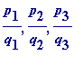
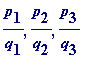

> # ictm_ply.mws
Speaker: John B. Cosgrave.
Address: Mathematics Department,
St. Patrick's College,
Drumcondra,
Dublin 9,
IRELAND.
e-mail: John.Cosgrave@spd.ie (College)
johnbcos@iol.ie (Home)
Web: http://www.spd.dcu.ie/johnbcos
Note
. The Maple file of this talk (and many other Maple worksheets)
may be accessed at my Web site.
Title of talk
:
Using Maple programming to investigate
L- and R-approximations to quadratic irrationalities
Comment on lecture title . Later you may agree that I could just as easily given
my talk the title Using L- and R-approximations to quadratic irrationalities to
introduce Maple programming .
A brief synopsis of my talk .
- Rational numbers, and classic examples of irrational numbers
- Rational approximations to , ...
-
Formulating the notions of
L-
and
R-approximations
to
 , ...
, ...
- Easily observed relationships between hand computed successive approximations,
- leading to precise formulations and search for proofs
- Surprises in store ...
-
When hand computation
appears
to let one down,
what
can one do to
attempt to find some L- and/or R-approximations [this is where Maple
really makes itself felt ... ] - Doable projects ... [also some deep, very advanced topics ( en passant )]
A statement of my basic philosophy . Ideally one would like ones students to be
more than passive absorbers of mathematical ideas. One would like ones students
to experience the thrill of making a mathematical discovery. The difficulty is to
identify topics that are neither trivial nor too advanced.
Some motivating questions .
Question(s) 1 .
-
What
is
the value of
 ? [Students should
see
? [Students should
see
 , should
think of it
as being
, should
think of it
as being
- e.g. - the length of the diagonal of the unit square.] - Is it (perhaps) 1.414213562 (the value given by a 10-digit calculator)?
- Is it (perhaps) the 1000-place decimal given below?:
> evalf(sqrt(2), 10);
> evalf(sqrt(2), 1000);
>
My experience is that I always receive from several students an argument
(perhaps not formulated exactly precisely, but at least in the right direction)
that
 does not have a
terminating decimal value
[I assume that the reason
does not have a
terminating decimal value
[I assume that the reason
for that immediately occurs to all of my readers. Requiring ones students to write
out of a formal proof of that simple (but non-trivial) result, is an interesting exercise.]
Observation . Every terminating decimal is [trivially] a rational number of a certain kind ,
that is, every terminating decimal is a rational number whose denominator is a power of 10 .
Question(s) (going back to classical times)
.
Could
it be that
 has a rational value?
has a rational value?
That is, could there be integers m and n such that ?
Let's have a look at the following rational number:
> r := 152139002499/107578520350;
>
whose square is:
> r^2;
>
Its decimal value to 10 palces is:
> evalf(r^2);
>
perhaps it is 2?
> evalf(r^2, 20);
> evalf(r^2, 30);
>
O.k., that '
' isn't 2, but it is pretty close to it, and so '
r
' itself is pretty close to
 .
.
There is agreement to at least 20 places:
> evalf(r, 20);

> evalf(sqrt(2), 20);

>
Look at what we get if we
lower
the numerator of
 by 1:
by 1:
> 23146276081390728245000/11573138040695364122500;

>
Definition 1
. Let
p
and
q
be natural numbers, then
 is said to be
is said to be
-
an
L-approximation to
 if
,
if
,
equivalently if ,
equivalently if .
-
an
R-approximation to
 if
,
if
,
equivalently if ,
equivalently if .
>
Hand computations to find some L- and R-approximations to
 :
:
eventually leads to finding that the numbers and are alternately
L- and R-approximations to
 .
.
The start of real progress . Some bright students will invariably call out that they
see some connections [I always try to play the innocent and say something like:
oh yes, like what ? ...].
And what are those connections?
Well they simply jump out at you!!
-
The sum of numerator and denominator for a
given
term of the sequence
(appear to) produce the denominator of the next rational in the sequence -
The sum of denominators of
two consecutive terms
of the sequence
(appear to) produce the numerator of the second of those terms
Question(s) 2 .
- Does that continue to happen (perhaps it is just a fluke on those early ones?)
-
Are there any
missing
L- and R-approximations to
 ? ['missing' in the sense
? ['missing' in the sense
that ... ]
Students can form some more by hand ... , but let's move quickly along to
some simple programs. Let's denote the alternating L- and R-approximations
to
 by

, ... ,
, ...
by

, ... ,
, ...
A formulation of the apparent connection between the p 's and q 's:
- It appears as though (for , ... )
-
It
appears
as though
(for
 , ... )
, ... )
Students are easily introduced to the following simple Maple program
(but one has to devote TIME to explaining all the elements involved):
>
p[1] := 1:
q[1] := 1:
for k from 2 to 50 do
q[k] := p[k-1] + q[k-1]:
p[k] := q[k-1] + q[k]
od:
seq(p[k]/q[k], k=1..50);
> p[30]/q[30]; # The 'r' from earlier is:
>
Question
. But are those rationals alternating L- and R-approximations to
 ?
?
Students should do some by hand and calculator before being exposed to:
> seq(p[k]^2 - 2*q[k]^2, k=1..50);
>
Computation on its own is not enough .
Happily a proof of the following elementary theorem is within
the reach of a good second level student (indeed finding a proof
is a really good test, and not an unreasonable one):
Theorem 1
.
Let
 be an L-approximation to
be an L-approximation to
 ,
,
then
 is an R-approximation to
is an R-approximation to
 ,
,
and
if
 is an R-approximation to
is an R-approximation to
 ,
,
then
 is an L-approximation to
is an L-approximation to
 .
.
Proof
.
First, suppose that
 is an L-approximation to
is an L-approximation to
 ;
;
then
 .
.
Thus
=
=
= ,
and it follows that
is an R-approximation to
 .
.
A similar argument [exercise for students] establishes the other half of theorem 1. [ end of proof ]
Comments .
Question (s) .
-
What happens when one similarly investigates
 ?
?
-
Does
 have L- and R-approximations?
have L- and R-approximations?
-
Are those L- and R-approximations related to each other in
some similar fashion?
First, let's get our definitions [one should first have discussed a proof of the
irrationality of
 - or at the very least alluded to the probability that
- or at the very least alluded to the probability that
straightened out:
Definition 2
. Let
p
and
q
be natural numbers, then
 is said to be
is said to be
-
an
L-approximation to
 if
,
if
,
equivalently if ,
equivalently if .
-
an
R-approximation to
 if
,
if
,
equivalently if ,
equivalently if .
With ones students one could do some hand computations [in fact that
is what I do with mine], along the lines of:
1. When then is not a square, but = ,
and so
is an R-approximation to
 .
.
2. When then is not a square,
nor is a square.
Thus
 has no L- or R-approximation with denominator 2.
has no L- or R-approximation with denominator 2.
etc.
Here, students are in for a surprise .
First I will redo to
 search for L- and R-approximations,
search for L- and R-approximations,
but using a simple Maple program (below).
First, some preliminaries:
>
### WARNING: persistent store makes one-argument readlib obsolete
readlib(issqr);
>
Testing to see if is a square when :
> issqr(2*4^2 - 1);

>
And so it isn't.
Testing to see if
 is a square when
:
is a square when
:
> issqr(2*5^2 - 1);

>
And what is it the square of?:
> sqrt(2*5^2 - 1);
>
Now we are ready to systematically look for L- and R-approximations
to
 . We limit ourselves to testing denominators up to 100:
. We limit ourselves to testing denominators up to 100:
>
for q to 100 do
if issqr(2*q^2 - 1)
then print(L, sqrt(2*q^2 - 1)/q)
elif issqr(2*q^2 + 1)
then print(R, sqrt(2*q^2 + 1)/q)
fi
od;
>
Now let's do the same for :
>
for q to 100 do
if issqr(3*q^2 - 1)
then print(L, sqrt(3*q^2-1)/q)
elif issqr(3*q^2 + 1)
then print(R, sqrt(3*q^2+1)/q)
fi
od;
>
So, a surprise!!
 would
appear
to have no L-approximations.
would
appear
to have no L-approximations.
A question . Is that true ? [Now that is a really good problem for students.]
An observation and another question
.
 certainly has
some
R-approximations, but
certainly has
some
R-approximations, but
- how many does it have?
- can one find (and prove) any connection between them?
>
>
>
>